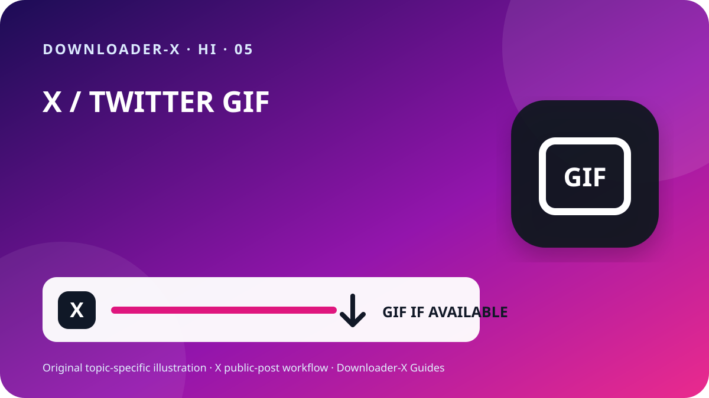

संक्षिप्त उत्तर
twitter gif download kaise kare — जिस X पोस्ट में वीडियो है उसे अलग पेज पर खोलें, यह सुनिश्चित करें कि वह सामान्य रूप से सार्वजनिक है, फिर शेयर मेनू से पोस्ट लिंक कॉपी करें। उस URL को Downloader-X में पेस्ट करें, परिणाम में दिखाई देने वाला वास्तविक MP4 विकल्प चुनें और सहेजने के बाद शुरुआत, बीच और अंत चलाकर चित्र तथा आवाज़ जाँचें। यह प्रक्रिया केवल अपने वीडियो, उपयुक्त लाइसेंस वाले मीडिया या मालिक से स्पष्ट अनुमति मिले कंटेंट के लिए करें। सार्वजनिक लिंक के लिए X पासवर्ड, सत्यापन कोड, ब्राउज़र कुकी या रिमोट कंट्रोल नहीं चाहिए।

Downloader-X के साथ तीन चरण
- इनपुट लिंक एक ही पोस्ट और उसके वीडियो की पहचान करे। X के शेयर मेनू से पोस्ट लिंक कॉपी करें और उसे एक बार नए टैब में खोलकर अंतिम पेज जाँचें। प्रोफ़ाइल या टाइमलाइन URL में कई पोस्ट होते हैं और वे लक्ष्य मीडिया नहीं बताते। यह छोटा कदम गलत लिंक और सेवा की समस्या में फर्क करता है तथा बार-बार क्लिक से बनने वाली अधूरी या डुप्लिकेट फ़ाइलों को रोकता है।
- जाँचा हुआ URL X डाउनलोडर में पेस्ट करें और प्रक्रिया एक बार शुरू करें। विकल्प आने के बाद शीर्षक या प्रीव्यू को मूल पोस्ट से मिलाएँ। केवल वही फ़ॉर्मेट और रिज़ॉल्यूशन चुनें जो परिणाम में सचमुच दिख रहे हों। स्रोत में 4K या 1080p न होने पर मार्केटिंग दावे को वास्तविक विकल्प न मानें। विफलता पर साफ़ त्रुटि दिखनी चाहिए; HTML पेज, इंस्टॉलर या गलत फ़ाइल को सफल वीडियो नहीं बताया जाना चाहिए।
- प्रगति पट्टी गायब होना सफलता नहीं है। फ़ाइल को वास्तविक वीडियो की तरह खुलना चाहिए। संग्रह या साझा करने से पहले जाँचें:
इस खोज का सही अर्थ
twitter gif download kaise kare. केवल सार्वजनिक पोस्ट। फ़ॉर्मेट और गुणवत्ता स्रोत से मिले वास्तविक विकल्पों पर निर्भर हैं।
1. सार्वजनिक पहुँच और उपयोग अधिकार जाँचें
प्रोफ़ाइल, खोज परिणाम, स्क्रीनशॉट या आगे भेजे गए प्रीव्यू के बजाय मूल पोस्ट से शुरू करें। URL को नए टैब में खोलकर खाता, टेक्स्ट, थंबनेल और अवधि मिलाएँ। पोस्ट का सार्वजनिक होना केवल वर्तमान पहुँच बताता है; इससे दोबारा पोस्ट, संपादन, बिक्री या विज्ञापन उपयोग की स्वतः अनुमति नहीं मिलती। यदि खाता संरक्षित है, पोस्ट हट चुकी है, विशेष लॉगिन चाहिए या कोई सीमा है, तो नियंत्रण को पार करने की कोशिश न करें और मालिक से अधिकृत प्रति माँगें।
सार्वजनिक दृश्यता पहुँच की सेटिंग है, उपयोग लाइसेंस नहीं। केवल अपना वीडियो, संगत लाइसेंस वाला मीडिया या स्पष्ट अनुमति प्राप्त कंटेंट सहेजें। दोबारा पोस्ट, संपादन या व्यावसायिक उपयोग के लिए पुष्टि करें कि अनुमति उस काम को कवर करती है और लिखित प्रमाण रखें। वीडियो में दिखने वाले लोगों, निजी जानकारी, संवेदनशील जगहों और नाबालिगों का सम्मान करें और दूसरों के काम को अपना न बताएँ।
2. सही पोस्ट URL कॉपी करें
इनपुट लिंक एक ही पोस्ट और उसके वीडियो की पहचान करे। X के शेयर मेनू से पोस्ट लिंक कॉपी करें और उसे एक बार नए टैब में खोलकर अंतिम पेज जाँचें। प्रोफ़ाइल या टाइमलाइन URL में कई पोस्ट होते हैं और वे लक्ष्य मीडिया नहीं बताते। यह छोटा कदम गलत लिंक और सेवा की समस्या में फर्क करता है तथा बार-बार क्लिक से बनने वाली अधूरी या डुप्लिकेट फ़ाइलों को रोकता है।
मूल वीडियो पोस्ट खोलकर उसके अलग पेज पर जाएँ।
शेयर मेनू से लिंक कॉपी करें, URL हाथ से न लिखें।
x.com या twitter.com डोमेन और पोस्ट URL की पुष्टि करें।
नए टैब में खाता, टेक्स्ट, थंबनेल और वीडियो मिलाएँ।
स्रोत URL और अनुमति का प्रमाण फ़ाइल के साथ रखें।
3. लिंक पेस्ट करें और वास्तविक परिणाम चुनें
जाँचा हुआ URL X डाउनलोडर में पेस्ट करें और प्रक्रिया एक बार शुरू करें। विकल्प आने के बाद शीर्षक या प्रीव्यू को मूल पोस्ट से मिलाएँ। केवल वही फ़ॉर्मेट और रिज़ॉल्यूशन चुनें जो परिणाम में सचमुच दिख रहे हों। स्रोत में 4K या 1080p न होने पर मार्केटिंग दावे को वास्तविक विकल्प न मानें। विफलता पर साफ़ त्रुटि दिखनी चाहिए; HTML पेज, इंस्टॉलर या गलत फ़ाइल को सफल वीडियो नहीं बताया जाना चाहिए।
6. सहेजी गई फ़ाइल सत्यापित करें
प्रगति पट्टी गायब होना सफलता नहीं है। फ़ाइल को वास्तविक वीडियो की तरह खुलना चाहिए। संग्रह या साझा करने से पहले जाँचें:
प्रकार चुने विकल्प से मेल खाता है, जैसे MP4, और HTML या इंस्टॉलर नहीं है।
आकार शून्य नहीं है और अवधि तथा गुणवत्ता के अनुसार उचित है।
शुरुआत, बीच और अंत में चित्र, अवधि और आवाज़ सही चलती है।
फ़ाइल नाम, फ़ोल्डर, स्रोत URL और अनुमति दर्ज है।
4. स्रोत और उपयोग के अनुसार HD चुनें
HD लेबल तभी भरोसेमंद है जब वह सार्वजनिक पोस्ट में उपलब्ध वास्तविक मीडिया विकल्प से आया हो। फ़ोन और लैपटॉप के लिए 720p अक्सर स्पष्टता, डेटा और स्टोरेज का संतुलन देता है; 1080p तब उपयोगी है जब स्रोत वास्तव में देता हो और बड़ी स्क्रीन पर विवरण चाहिए। समान रिज़ॉल्यूशन में भी बिटरेट, कोडेक और कम्प्रेशन अलग हो सकते हैं, इसलिए फ़ाइल चलाकर जाँचें। आवाज़ आवश्यक हो तो वीडियो और ऑडियो वाला संयुक्त विकल्प चुनें और सहेजते ही ट्रैक की पुष्टि करें।
स्रोत से फ़ाइल तक क्रमवार समस्या सुलझाएँ
वीडियो पोस्ट पर लौटकर शेयर से URL कॉपी करें; प्रोफ़ाइल एक मीडिया नहीं बताती।
कंटेंट संरक्षित या सीमित हो सकता है। क्रेडेंशियल या कुकी न दें; अधिकृत प्रति माँगें।
पोस्ट मौजूद है, नेटिव वीडियो है और कॉपी URL खुलता है—यह जाँचकर एक बार रीफ़्रेश करें।
फ़ाइल हटाएँ, एक्सटेंशन न बदलें और URL तथा वास्तविक वीडियो विकल्प फिर जाँचें।
मूल पोस्ट, डिवाइस वॉल्यूम और दूसरा विश्वसनीय प्लेयर जाँचें; आवश्यकता हो तो संयुक्त विकल्प चुनें।
लंबे समय तक रखने से पहले स्रोत दर्ज करें
कई क्लिप वाले प्रोजेक्ट में खाता, पोस्ट तारीख, स्थायी URL, छोटा विवरण, चुना विकल्प, फ़ाइल आकार और अनुमति का आधार लिखें। इससे फ़ाइल स्रोतविहीन नहीं होती और बाद में क्रेडिट या लाइसेंस जाँचना आसान रहता है। कोट पोस्ट, जवाब या थ्रेड में उसी पोस्ट का URL कॉपी करें जिसमें वीडियो वास्तव में है, केवल उसे उद्धृत करने वाले पोस्ट का नहीं।
सुरक्षा और गोपनीयता
सार्वजनिक लिंक प्रक्रिया को X पासवर्ड, दो-चरण कोड, एक्सपोर्ट की गई कुकी, रिमोट कंट्रोल, executable इंस्टॉलर या सुरक्षा बंद करने की आवश्यकता नहीं है। .exe, .dmg या असंबंधित ब्राउज़र एक्सटेंशन मिलने पर रुकें। खोलने से पहले डोमेन, फ़ाइल प्रकार और स्रोत जाँचें। साझा डिवाइस पर अधिकृत फ़ाइल को सार्वजनिक फ़ोल्डर से हटाएँ और अनावश्यक अस्थायी प्रतियाँ मिटाएँ।
5. iPhone, Android, Windows या Mac पर सहेजें
iPhone और iPad पर Safari डाउनलोड सामान्यतः Files ऐप के Downloads फ़ोल्डर या चुनी हुई जगह में मिलता है। Android पर ब्राउज़र डाउनलोड सूची या Files ऐप देखें। Windows, macOS, Linux और ChromeOS पर दोबारा क्लिक करने से पहले Downloads फ़ोल्डर और ब्राउज़र इतिहास जाँचें। जगह कम हो तो अनावश्यक प्रतियाँ हटाएँ या कम रिज़ॉल्यूशन चुनें। किसी पेज के कहने भर से अज्ञात डाउनलोड मैनेजर या एक्सटेंशन इंस्टॉल न करें।
फ़ाइल व्यवस्थित करें और डुप्लिकेट रोकें
फ़ाइल नाम में छोटा विषय, खाता, तारीख और गुणवत्ता रखें, जैसे topic_creator_2026-08-30_720p.mp4। अस्थायी और सत्यापित फ़ोल्डर अलग रखें तथा केवल आवश्यक विकल्प बचाएँ। बार-बार क्लिक से गुणवत्ता नहीं बढ़ती; आम तौर पर डुप्लिकेट या अधूरी फ़ाइल बनती है। स्रोत URL, क्रेडिट और उपयोग शर्तें उसी प्रोजेक्ट की नोट या स्प्रेडशीट में रखें।
अंतिम 60 सेकंड की सूची
पोस्ट बिना नियंत्रण पार किए सार्वजनिक है।
आप मालिक हैं या सहेजने की अनुमति है।
चुनी गुणवत्ता वास्तविक परिणाम में दिखती है।
आगे का उपयोग अनुमति से बाहर नहीं है।
गलत परिणाम से बचने की जाँच
X की व्यावहारिक गाइड · 1
रिज़ॉल्यूशन स्रोत फ़ाइल और वास्तव में उपलब्ध मीडिया विकल्पों पर निर्भर है।
कंटेंट संरक्षित या सीमित हो सकता है। क्रेडेंशियल या कुकी न दें; अधिकृत प्रति माँगें।
नए टैब में खाता, टेक्स्ट, थंबनेल और वीडियो मिलाएँ।
नहीं। पुनर्वितरण और इच्छित उपयोग को अनुमति देने वाला लाइसेंस या अनुमति चाहिए।
सार्वजनिक लिंक प्रक्रिया को X पासवर्ड, दो-चरण कोड, एक्सपोर्ट की गई कुकी, रिमोट कंट्रोल, executable इंस्टॉलर या सुरक्षा बंद करने की आवश्यकता नहीं है। .exe, .dmg या असंबंधित ब्राउज़र एक्सटेंशन मिलने पर रुकें। खोलने से पहले डोमेन, फ़ाइल प्रकार और स्रोत जाँचें। साझा डिवाइस पर अधिकृत फ़ाइल को सार्वजनिक फ़ोल्डर से हटाएँ और अनावश्यक अस्थायी प्रतियाँ मिटाएँ।
X की व्यावहारिक गाइड · 2
वीडियो पोस्ट पर लौटकर शेयर से URL कॉपी करें; प्रोफ़ाइल एक मीडिया नहीं बताती।
प्रकार चुने विकल्प से मेल खाता है, जैसे MP4, और HTML या इंस्टॉलर नहीं है।
फ़ाइल नाम, फ़ोल्डर, स्रोत URL और अनुमति दर्ज है।
पोस्ट मौजूद है, नेटिव वीडियो है और कॉपी URL खुलता है—यह जाँचकर एक बार रीफ़्रेश करें।
आगे का उपयोग अनुमति से बाहर नहीं है।
X की व्यावहारिक गाइड · 3
प्रगति पट्टी गायब होना सफलता नहीं है। फ़ाइल को वास्तविक वीडियो की तरह खुलना चाहिए। संग्रह या साझा करने से पहले जाँचें:
मूल वीडियो पोस्ट खोलकर उसके अलग पेज पर जाएँ।
फ़ाइल हटाएँ, एक्सटेंशन न बदलें और URL तथा वास्तविक वीडियो विकल्प फिर जाँचें।
शुरुआत, बीच और अंत में चित्र, अवधि और आवाज़ सही चलती है।
अक्सर पूछे जाने वाले प्रश्न
twitter gif download kaise kare?
केवल सार्वजनिक पोस्ट। फ़ॉर्मेट और गुणवत्ता स्रोत से मिले वास्तविक विकल्पों पर निर्भर हैं।
क्या संरक्षित खाते से डाउनलोड कर सकते हैं?
नहीं। यह गाइड केवल सार्वजनिक पोस्ट के लिए है और प्रतिबंध पार नहीं करता।
क्या सार्वजनिक पोस्ट को तुरंत दोबारा पोस्ट कर सकते हैं?
नहीं। पुनर्वितरण और इच्छित उपयोग को अनुमति देने वाला लाइसेंस या अनुमति चाहिए।
हर पोस्ट में 1080p क्यों नहीं है?
रिज़ॉल्यूशन स्रोत फ़ाइल और वास्तव में उपलब्ध मीडिया विकल्पों पर निर्भर है।
क्या x.com और twitter.com दोनों लिंक चलेंगे?
हाँ, यदि वे उसी सार्वजनिक पोस्ट पर जाएँ और अंतिम पेज जाँचा गया हो।
संबंधित X गाइड
सही सार्वजनिक पोस्ट लिंक इस्तेमाल करें
केवल सार्वजनिक पोस्ट। फ़ॉर्मेट और गुणवत्ता स्रोत से मिले वास्तविक विकल्पों पर निर्भर हैं।
Downloader-X खोलें